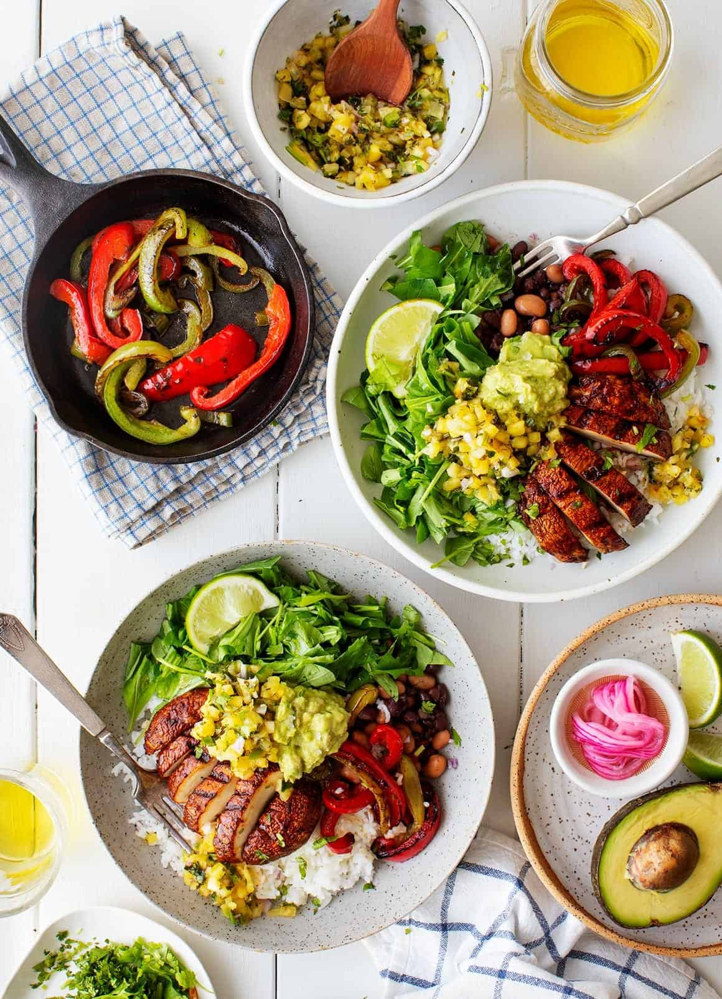

The Little Kitchen
A family food blog with easy, well tasted, family approved recipes!
Dinner Ideas

- Vegan Quesadilla Recipe
- Vegan Burrito Bowl

Ingredients :
- Bowls
- 1 cup cooked pinto beans or black beans, drained and rinsed
- 1 to 2 chopped chipotle peppers from a can of chipotles in adobo
- ½ teaspoon extra-virgin olive oil, more for drizzling
- 1 cup cooked white, brown, or cilantro lime rice
- 2 cups arugula, chopped
- ½ cup guacamole
- ½ cup pineapple salsa
- ¼ cup chopped cilantro
- Sea salt and freshly ground black pepper
- Veggies
- 2 portobello mushroom caps
- Extra-virgin olive oil, for drizzling
- Adobo sauce from the can of chipotles used above
- Sea salt and freshly ground black pepper
- 1 red bell pepper, stem, ribbing and seeds removed, sliced into strips
- 1 green pepper, stem, ribbing and seeds removed, sliced into strips
- 1 jalapeño pepper, ribbing and seeds removed, sliced into thin strips, optional
Instructions :
- In a small bowl, combine the beans with the chipotle peppers, olive oil, lime juice, ¼ teaspoon salt, and several grinds of pepper.
- Prepare the veggies: Preheat a grill to medium heat with a cast iron pan inside. You'll grill the mushrooms directly on the grill, and the sliced peppers in the cast iron pan.
- Rub the whole mushroom caps with a drizzle of olive oil and a few spoonfuls of adobo sauce. Use enough sauce to coat the mushrooms well on each side. Sprinkle with salt and pepper. Grill the portobellos (directly on the grill grate) 4 to 5 minutes per side or until charred and tender. Slice just before assembling the bowls.
- Toss the pepper strips with a drizzle of olive oil and pinches of salt and pepper. Grill in the cast iron pan or grill pan for 8 to 10 minutes, tossing occasionally, until charred and soft.
- Assemble the bowls with the rice, beans, arugula, sliced mushrooms, peppers, guacamole, scoops of pineapple salsa, and cilantro. Serve with extra salsa and extra lime wedges on the side. (Note: If you would like your arugula and rice seasoned/dressed more, drizzle with olive oil, squeezes of lime and pinches of salt and pepper).